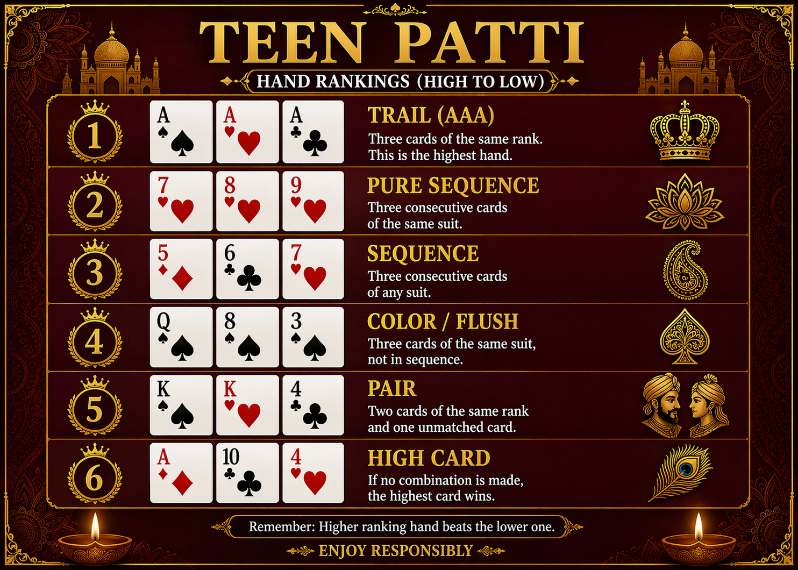

Teen Patti Guide: Rules, Hand Rankings & How to Play
Start with the complete article covering Teen Patti basics, card hand rankings, gameplay flow, beginner tips, and FAQ. This is the best first click for new readers.
Read the full article →Discover Teen Patti rules, hand rankings, gameplay flow, beginner mistakes, and practical strategy tips in one place. Built for readers in India who want a clean and simple guide.

Start with this comprehensive article covering all the essentials of Teen Patti.
Start with the complete article covering Teen Patti basics, card hand rankings, gameplay flow, beginner tips, and FAQ. This is the best first click for new readers.
Read the full article →This page is perfect for first-time readers who want a simpler introduction before reading the full guide.
Learn the essential rules of Teen Patti, including boot amount, dealing cards, betting rounds, blind vs seen, player actions, and common beginner mistakes.
Read fundamentals →Ready to level up? Master strategic gameplay with advanced concepts used by experienced players.

Move beyond basics with advanced concepts including information advantage, pot control, pressure play, timing, table image, and strategic decision-making.
Read advanced concepts →Common questions from beginners learning Teen Patti.
Teen Patti is a popular Indian three-card game that combines luck, hand strength, and betting decisions.
The highest hand is Trail, which means three cards of the same rank.
Start with the full beginner guide linked above, then review the hand ranking infographic before reading strategy tips.
Advanced concepts include psychology, information advantage, pot control, pressure play, and strategic decision-making beyond just card strength.